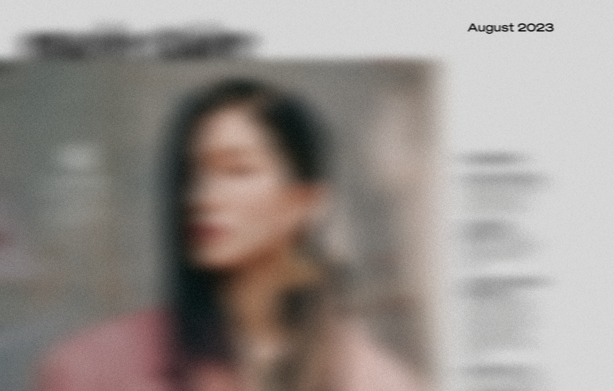

흐릿한 기억을 회상하려 애쓰며,
당신은 약간 식은 커피를 한 모금 마십니다.
턱을 괴고 정면을 바라보자,
잡지들이 꽂혀있는 책장이 보입니다.
당신은 그 중에 한 권을 꺼내들고 천천히 읽어봅니다.

마지막 문장까지 읽은 당신은,
다시 한 번 커피를 한 모금 마십니다.
당신은 잔을 내려놓고,
마지막 문장을 다시 한 번 읽으며 생각합니다.
'나도 그렇다고 생각해.'